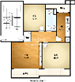

추천 맞춤매물 정보를 최대 4건까지 선택하여 비교해보실 수 있습니다. 비교할 매물추가하기
| 거래,매물종류 | 매매,아파트 | 매매,아파트 | 매매,아파트 |
|---|---|---|---|
| 매물명 | 삼성 래미안 관심 삭제 | 삼성 래미안 관심 삭제 | 삼성 래미안 관심 삭제 |
| 지역 | 경기도 고양시 일산동구 정발산동 |
경기도 고양시 일산동구 정발산동 |
경기도 고양시 일산동구 정발산동 |
| 가격(만원) | 3억~5억 | 3억~5억 | 3억~5억 |
| 면적(㎡) | 65㎡~100㎡ | 65㎡~100㎡ | 65㎡~100㎡ |
| 총세대 수 | 1234세대 | 1234세대 | 1234세대 |
| 준공년도 | 2002.9.10 | 2002.9.10 | 2002.9.10 |
| 층/구조 | 3층, 방3개, 욕실2개 | 3층, 방3개, 욕실2개 | 3층, 방3개, 욕실2개 |
| 기전세/월세 | - 만원 / - 만원 | - 만원 / - 만원 | - 만원 / - 만원 |
| 융자금 | - 만원 | - 만원 | - 만원 |
| 추천매물특징 |
아이들의 소음으로인해 저층부로 원함.
|
아이들의 소음으로인해 저층부로 원함.
|
아이들의 소음으로인해 저층부로 원함.
|
| 추천사유 |
원하는 조건에 맞는 집을 찾기 어려워 발품을 팔다 맞춤 매물을 발견하고 의뢰를 신청하게 되었습니다.
원하는 조건에 맞는 집을 찾기 어려워 발품을 팔다 맞춤 매물을 발견하고 의뢰를 신청하게 되었습니다. |
원하는 조건에 맞는 집을 찾기 어려워 발품을 팔다 맞춤 매물을 발견하고 의뢰를 신청하게 되었습니다.
원하는 조건에 맞는 집을 찾기 어려워 발품을 팔다 맞춤 매물을 발견하고 의뢰를 신청하게 되었습니다. |
원하는 조건에 맞는 집을 찾기 어려워 발품을 팔다 맞춤 매물을 발견하고 의뢰를 신청하게 되었습니다.
원하는 조건에 맞는 집을 찾기 어려워 발품을 팔다 맞춤 매물을 발견하고 의뢰를 신청하게 되었습니다. |
| 평면도 |  |